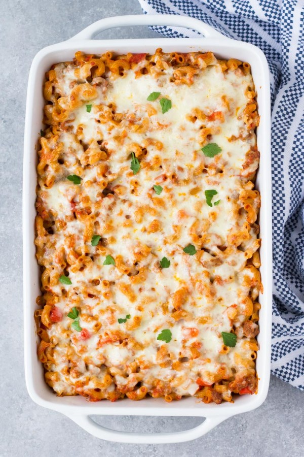

Return
Macaroni Pasta Bake

So good, it's concerning!
This yummy pasta bake is simple to make, but really scrumptious and filling, as it's mega loaded. If you manage to eat all of this in one sitting, you will probably pass out.
Hopefully when you come back to earth, you can eat more!
Ingredients
- 16 ounces elbow pasta
- 1 tablespoon olive oil
- 1 cup chopped yellow onion
- 1 bell pepper (chopped)
- 3 gloves garlic (minced)
- 1 pound lean ground beef (or ground turkey)
- 32 ounces marinara sauce
- 1/2 teaspoon salt
- 1/4th teaspoon pepper
- 2 cups shredded cheddar cheese
- 1 cup shredded mozzarella cheese
Steps
- Preheat oven to 350 degrees. Lightly grease a 9x13 baking dish.
- Bring a large pot of salter water to boil. Add the pasta and cook according to package directions for al dente. Reserve 1/2 cup of the pasta cooking water and then drain the pasta.
Return the drained pasta to the pot.
- Heat the olive oil in a large skilled over medium-high heat. Add the onion and bell pepper to the pan. Stir often until the vegetables soften.
- Add the garlic and cook, stirring for 30 seconds. Add the ground beef to the pan. Crumble the beef and cook until it is browned.
- Pour the marinara sauce and reserved 1/2 cup of pasta cooking water into the skillet. Stir in the salt and pepper. Bring to a simmer for about 10 minutes.
- Pour the meat and sauce mixture into the pot with the pasta. Stir the shredded cheddar cheese. Transfer the pasta mixture to the prepared casserole dish. Top with mozzarella cheese.
- Bake for 20-25 minutes, let stand for 5 minutes and then serve.